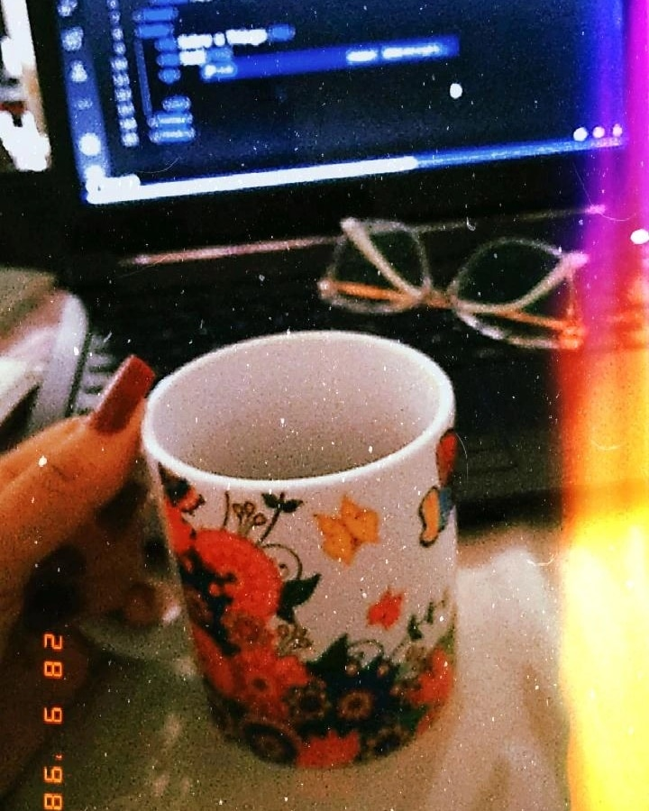

Esse ano não teve ritual, não teve sete ondas, flores ao mar ou lentilha. não teve lista de metas nem de resoluções. estamos no dia 11 de janeiro e eu “só” segui vivendo. ainda não entrei no mar nem abri o caderno novo. mas me matriculei na academia. pra mim e pro mundo, esse ano novo começou com cheiro de roupa velha guardada no armário. o vírus continua aí e eu sinto tanta saudade daqueles dias em que ninguém sabia o que significava a palavra antígeno. também carrego nas coisas outros poréns que se arrastam. queria ter começado um novo ciclo com gás, esperança e força total. mas eu tou cansada e fiz o que deu. como mulher, como mãe, como gente. é o que tem pra hoje. enquanto procuro ânimo aqui na entranhas, espero o sol sair para o primeiro mergulho do ano. até lá, ficamos com as poças de lama, que, assim como dia ruins, têm certa beleza e relevância.
